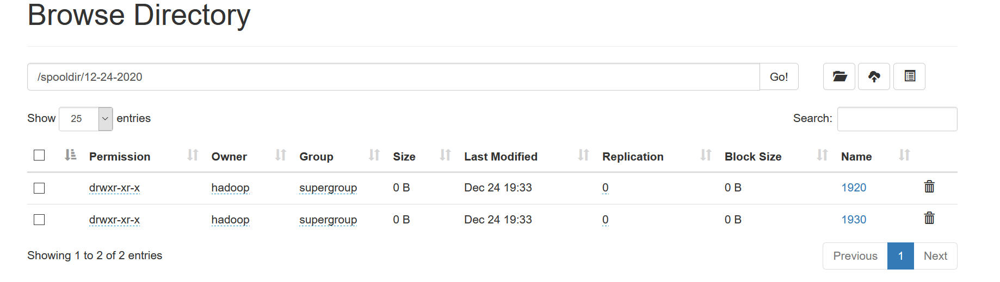
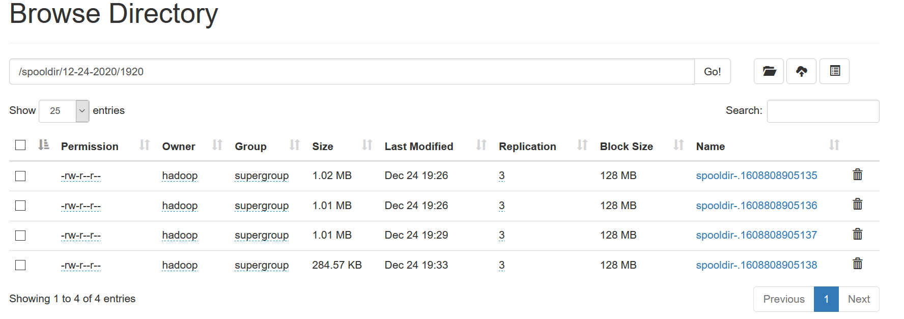
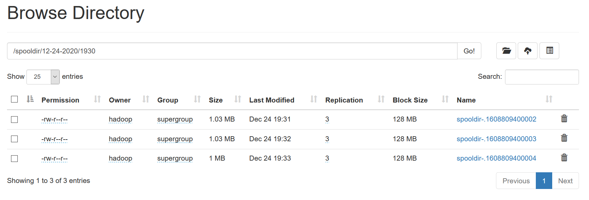

1、实操：flume监控本地目录，有新文件产生，就将其数据采集到hdfs。要求：
（1）、选择正确的source类型，监控的路径名称/home/hadoop/flume/spoolsource
（2）、channel要求使用file channel（若不知道如何用，按照上课讲的方式，查官方文档）
（3）、sink组件要求
数据写入hdfs的路径格式为hdfs://node01:8020/spooldir/07-20-2020/1410/
数据自动根据年月日时分实际情况，写入相应的目录中
如2020-07-20号14点10分到19分的数据的数据写入目录/spooldir/07-20-2020/1410/；
2020-07-21号16点20分到29分的数据的数据写入目录/spooldir/07-21-2020/1620/；
其他时间的数据，写入对应目录
（4）、hdfs上生成的文件名前缀是“spooldir-”
（5）、hdfs的文件，每写入1M的数据，就滚动生成一个新的文件
（6）对hdfs生成的目录及文件列表进行截图，能说明运行成功即可；粘贴到PDF
创建/kkb/install/apache-flume-1.9.0-bin/conf/spooldir.conf：
# Name the components on this agent a1.sources = r1 a1.sinks = k1 a1.channels = c1 # Describe the source a1.sources.r1.type = spooldir a1.sources.r1.spoolDir = /home/hadoop/flume/spoolsource # Whether to add a header storing the absolute path filename a1.sources.r1.fileHeader = true # Describe the sink a1.sinks.k1.type = hdfs a1.sinks.k1.hdfs.path = hdfs://node01:8020/spooldir/%m-%d-%Y/%H%M/ a1.sinks.k1.hdfs.filePrefix = spooldir- a1.sinks.k1.hdfs.round = true a1.sinks.k1.hdfs.roundValue = 10 a1.sinks.k1.hdfs.roundUnit = minute a1.sinks.k1.hdfs.rollInterval = 0 a1.sinks.k1.hdfs.rollSize = 1048576 a1.sinks.k1.hdfs.rollCount = 0 a1.sinks.k1.hdfs.batchSize = 1 a1.sinks.k1.hdfs.useLocalTimeStamp = true a1.sinks.k1.hdfs.fileType = DataStream # Use a channel which buffers events in file a1.channels.c1.type = file a1.channels.c1.capacity = 1000 a1.channels.c1.transactionCapacity = 100 # Bind the source and sink to the channel a1.sources.r1.channels = c1 a1.sinks.k1.channel = c1
启动flume：
cd /kkb/install/apache-flume-1.9.0-bin bin/flume-ng agent -c ./conf -f ./conf/spooldir.conf -n a1 -Dflume.root.logger=INFO,console
最后，将不同的文件上传到/home/hadoop/flume/spoolsource/目录下。
运行结果：


 2、判断题：
增加agent的source 个数，进而提高source读取数据吞吐量
对。当输入单个source的数据传输存在瓶颈时，增加source并同时增加输入数据源数量可以提高source读取数据吞吐量。
3、判断题：
减小batchSize，适当提高采集频率，可以调高 source 搬运数据到 channel 的性能
错。当一段时间内产生的events较少时，减小batchSize适当提高采集频率，可增加source搬运数据到channel的实时性，这种情况下确实可以提高性能；但当极短的时间内产生大量的events时，减小batchSize提高采集频率，会使source搬运数据到channel的次数变得非常频繁，反而降低了性能。